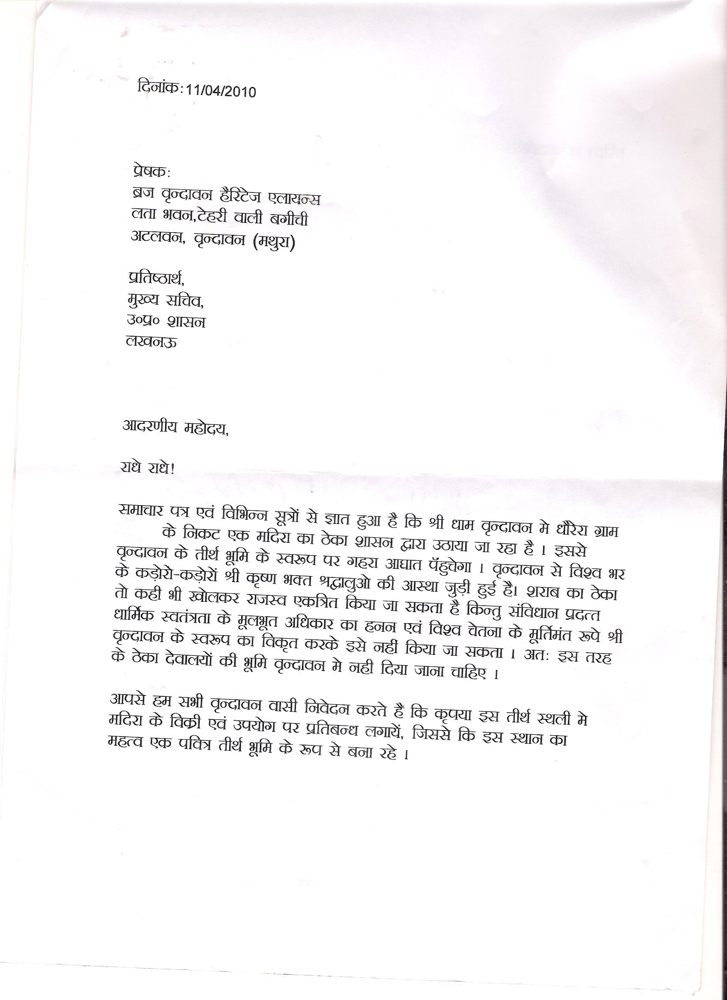
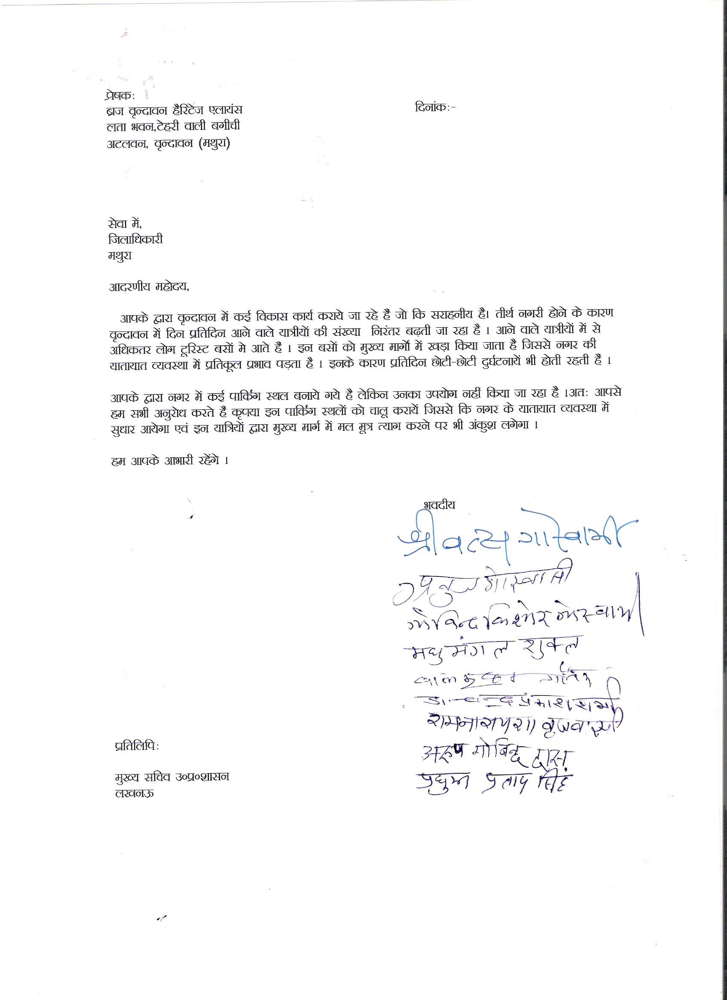

November 29th, 2010Flyover – plus and minus. Hindi
November 29th, 2010Flyover – plus and minus. English
November 29th, 2010Questionnaire about Braj protection – english
November 29th, 2010Questionnaire about Braj protection – hindi
August 12th, 2010Press Release: World Heritage Day Demonstration
The members of the Braj – Vrindavan Heritage Alliance organized a demonstration on the eve of the World Heritage Day in front of the Ancient Govind Dev Temple in Vrindavan. The demonstrators said that the ancient buildings, temples, water bodies, hills and the ghats should be conserved. They said that the Govind Dev Temple is a unique temple which is very rich in it architecture. This temple is the biggest heritage of its type in North India. All the devotees and brajwasis who love art and culture should attribute to the protection of these heritage buildings. Though billions of people visit Braj – Vrindavan but they don’t contribute much to the development and conservation of Vrindavan. The numbers of the tourists coming to Vrindavan can be increase if these heritage buildings are conserved. Tourist will be happy to pay to visit these heritage sites.
The culture of Braj should also be conserved and protected along with these heritage sites. The ancient monuments and buildings are the living heritage where daily rituals like worship, preaching and kirtan are performed. The devotees come to this place with faith and devotion. Some old buildings and temples having architectural value have been grabbed illegally. The Archeological Survey of India and the U.P. State archeological department is not taking any steps to get them back under their control.
They demanded that Vrindavan should be declared as a World Heritage City by the UNESCO. They also demanded the Archaeological departments should be seriously work to conserve and protect them to prevent the public ire against these departments.
Shri Bal Krishna Goutam, Shri Anuj Kumar Goswami, Shri Pradyumna Pratap Singh, Shri Ram Narayan Brajwasi , Shri Vishnu Das, Shri Ashok Agarawal, Shri Gopal Sharma, Shri Madhu Mangal Sharma, Shri Premananda Saraswati, Shri Kailash Dixit, Shri Dhar Sharma, Jagannath Poddar, Ravindra Kulshreshtha , Shri Kanhaiya Gupta and many others were present in the demonstration.
International Conference on Asian
World Heritage Cities
Dear All,
I am currently attending the International Conference on Asian World Heritage Cities. This conference is a joint effort between the Ahmedabad Municipal Corporation, UNESCO, the National Institute for Urban Affairs, the Jawaharlal Nehru National Urban Renewal Project, Sabarmati River Front Development Corporation and the Centre for Environmental Planning and Technology.
The conference started yesterday, April 19 and runs until the 21st. The head of Archaeological Survey of India is here, as well as the entire UNESCO New Delhi staff and many others that will have advice for us.
My strategy now involves two things:
1) Getting enough information to make a persuasive argument to Vrindavan municipality to join UNESCO’s Indian Heritage Cities Network-this is relatively easy and painless compared to World Heritage Status. It also offers less protection, but we should work one step at a time. The IHCN was created specifically to help cities to protect heritage while simultaneously growing in terms of population and economy. Please see http://www.ihcn.in/ for more information about the Indian Heritage Cities Network. Here is the list of things that UNESCO expects in return from the municipality:http://www.ihcn.in/index.php?option=com_content&view=article&id=135&Itemid=176
The NGO Friends of Vrindavan is already a member of this network.
2) People from the National Institute of Urban Affairs (including the director) are here, and have a lot of ideas and best practices to share re: heritage conscious planning.
Representatives from other Indian cities are present and sharing strategies also. I want to find out how to use these, along with UNESCO’s development tool kits, to their maximum potential for creating a comprehensive alternative development plan with which we can approach MVDA.
This conference has highlighted once again how arduous it really is to obtain World Heritage Status. Ahmedabad, which is currently poised to be India’s first World Heritage City, has been working toward this goal for forty years. Also, it is absolutely necessary that the government be actively involved, from the municipal level upward.Public support is good – it may pressure the governments into doing something – but without their active participation,the World Heritage Status process cannot even get started. UNESCO has suggested that I ask ASI and INTACH for help in nudging Vrindavan municipality in this direction. I am doing what I can on this front. UNESCO has been very supportive and acknowledges the heritage value of Vrindavan and Braj a s a whole – at last night’s inaugural speech for the conference, UNESCO Director for India Sri Armoogum Parsuramen mentioned the efforts of cities other than Ahmedabad to obtain World Heritage status, citing Chandigarh, Benares and Vrindavan specifically. This shows that we are indeed on their minds when it comes to the Heritage Status listing.
UNESCO has expressed that if World Heritage Status is sought, that it should be for the Braj region as a whole. This make things even more difficult, as the cultural region of Braj lies within three different Indian states – Rajasthan, Haryana and UP.
Another issue that has been brought up a number of times already is the need to get local people interested in heritage conservation, finding ways in which such efforts will enhance their livelihoods and communicating that to them.
This is an area in which we are still wanting with efforts to encourage sensible development in Vrindavan and Braj as a whole. All development is seen as good development; people base decisions on gossip over who stands to gain the most from a given project or who has taken or offered bribes rather than on the effect the project will have on the Vrindavan they pass on to their children.
For those of you who do not know, communicating about conservation is the key issue I am investigating in my Fulbright research in Vrindavan. It is my hope to help achieve such communication in any way possible both within and without my research project.
Thank you for reading the long letter and DO PLEASE contact me if you feel there is anything in particular you would like me to communicate to the many important agencies at this conference.
Jai Yamuna-ji,
Katie Jo Walter
Letter addressed to the Chief Secretary of Uttar Pradesh against opening a wine shop in the parameters of Vrindavan in the Dhaurera Village.
Those present in the meeting at the Gokulananda Mandir have signed the petition.


Court No. – 9
Case :- PUBLIC INTEREST LITIGATION (PIL) No. – 2593 of 2010
Petitioner :- Madhu Mangal Shukla
Respondent :- Union Of India Thru. Secr. Ministry Of Environment &
Others
Petitioner Counsel :- A. Chaturvedi,Amit Verma,G.N. Verma
Respondent Counsel :- A.S.G.I.,A.K. Nigam,C.S.C. (2010/2052),D.S.
Chauhan,Dr.Ashok Nigam,Irfan Ali,R.P. Mishra,Rajesh Mishra
Hon’ble Vijay Manohar Sahai,J.
Hon’ble Raj Mani Chauhan,J.
Counter affidavit filed by the respondents as directed by this Court, is taken on record. Three weeks’ time is allowed to the petitioner to file rejoinder affidavit. Two copies of the Map of the bridge under construction shown to the Court, which are taken on record. The Standing Counsel is directed to file the copies of the Map by filing an affidavit.
Heard Sri A. Chaturvedi for the petitioner and Sri Yogendra Yadav, Sri V.C. Mishra, Senior Advocate, assisted by Sri D. S. Chauhan, Sri Yashwant Verma and Sri P.C. Shukla and R.P. Mishra appearing for the respondents.
We have gone through the counter affidavits filed by the respondents and the Map shown to the court. From a perusal of Map it appears that the bridge is being constructed across the river by making a new Parikrama Marg, which will facilitate the pilgrims.
We are prima facie satisfied that the bridge is being constructed across the river. Further in the counter affidavit a letter of the Commissioner, Agra Division, Agra has been filed. In the letter dated 16.3.2010 of the Commissioner, Agra Division, Agra, it has been stated that even though the land in dispute is within the Taj Trapezium Zone but the permission and clearance from environment department is not necessary as the construction of bridge is not causing any pollution which may be detrimental to the Taj Trapezium Zone.
In view of the above, the interim orders dated 21.01.2010 and 23.02.2010 are hereby vacated.
The matter is released. List before a Division Bench for hearing after obtaining nomination from Hon’ble the Chief Justice.
Order Date :- 29.3.2010
Prajapati